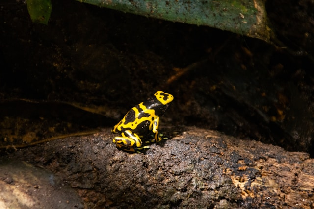
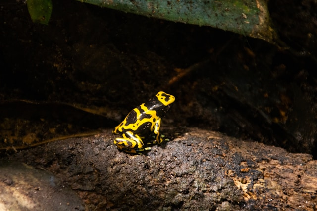
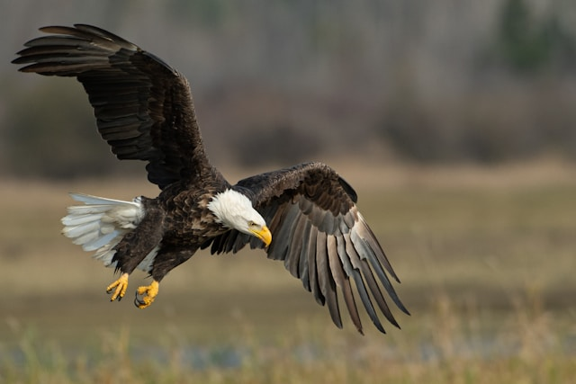
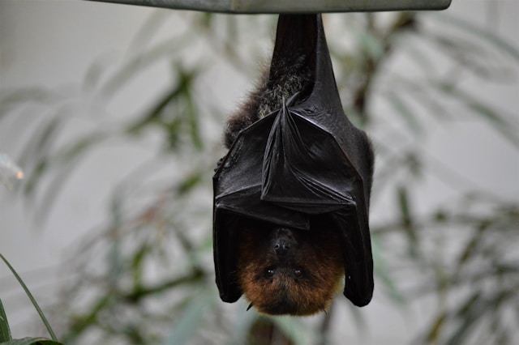

Poison Dart Frog
Its skin secretes toxins powerful enough to kill predators.
Photo by Ian Murray on Unsplash
Its skin secretes toxins powerful enough to kill predators.
Photo by Ian Murray on Unsplash
Has eyesight up to 5 times sharper than a human's.
Photo by Richard Lee on Unsplash
Uses echolocation to hunt and fly in complete darkness.
